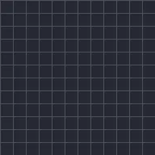

Прогресс текста

Показывает текст между «Началом» и «Концом» по символам, словам или строкам, с появлением, сдвигом, масштабированием или размытием.
Прогресс текста показывает текстовый слой постепенно. Анимируйте Конец от 0 % до 100 %, и текст появляется по символам, словам или строкам (параметр На основе) в порядке, заданном параметром Направление. Появление задаёт, как входит каждая часть: скачок, проявление, въезд, рост, сжатие или размытие. В готовых пресетах «Печатная машинка», «Появление по словам», «Въезд вверх по буквам» и «Появление скачком» ключевые кадры уже настроены.
Настройки
| Настройка | Тип | Диапазон | По умолчанию |
|---|---|---|---|
| Начало | Число | от 0% до 100% | 0% |
| Конец | Число | от 0% до 100% | 100% |
| На основе | Выбор | Символ, Слово, Строка | Символ |
| Направление | Выбор | С начала, С конца, От центра, Случайно | С начала |
| Появление | Выбор | Скачок, Проявление, Въезд вверх, Въезд вниз, Въезд влево, Въезд вправо, Рост, Сжатие, Размытие | Проявление |
| Мягкость | Число | от 0 до 50 | 0 |
| Расстояние | Число | от 0 до 1000 | 40 |
| Сид | Число | от 0 до 1000 | 1 |
| Стиль | Выбор | Классический, Стандартный | Классический |
Пресеты
Выберите пресет на странице эффекта в библиотеке эффектов. Каждый пресет — готовая настройка, которую можно менять дальше.
- Печатная машинка
 Появление по словам
Появление по словам Въезд вверх по буквам
Въезд вверх по буквам
Появление скачком